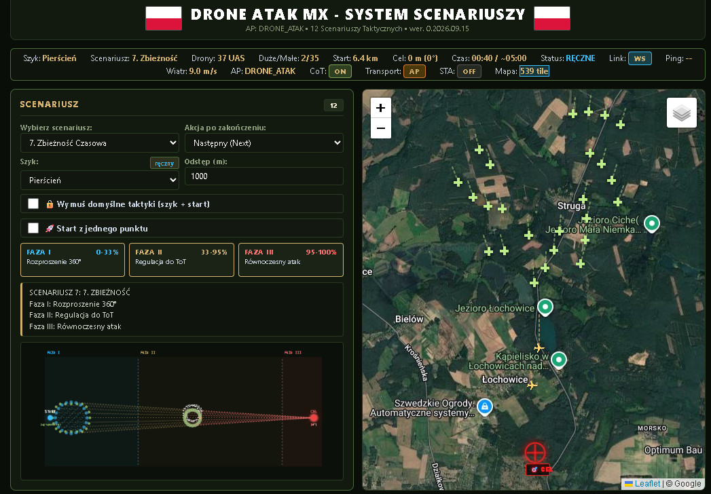
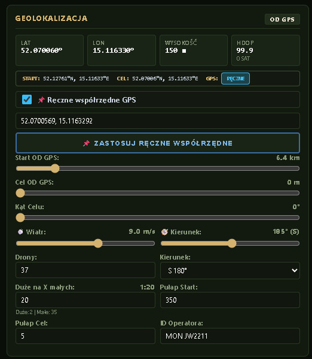
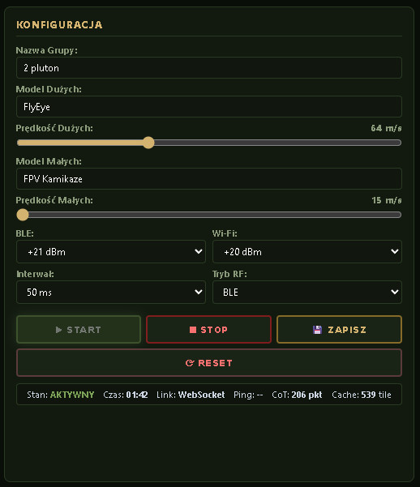
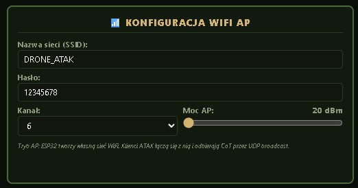
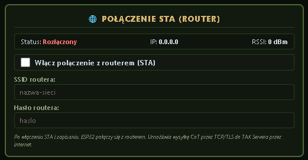
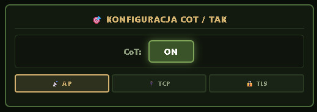
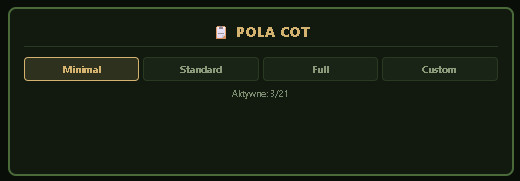
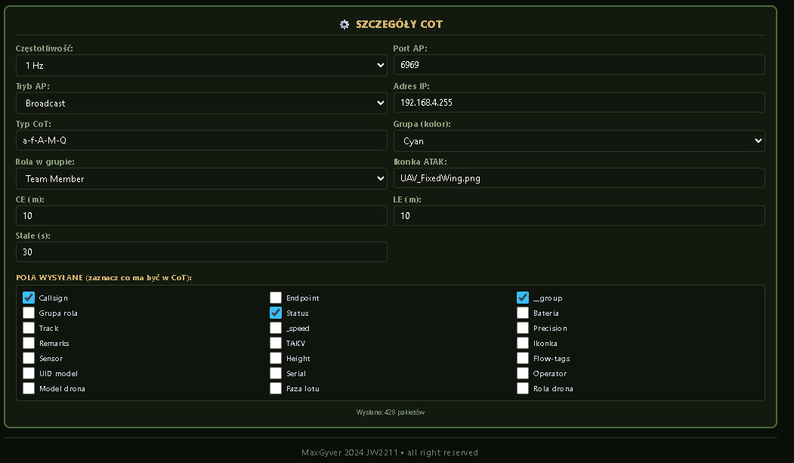

Taktyczny Symulator Dronów
DRONE ATAK MX • system symulacyjny nalotu na cel do 200 dronów bojowych.
O symulatorze — ogólne informacje
DroneAtak MX to wieloobiektowy symulator roju dronów, przeznaczony do szkolenia operatorów systemów świadomości sytuacyjnej oraz personelu C-UAS (Counter-UAS). Urządzenie generuje do 200 wirtualnych dronów jednocześnie, z których każdy ma własny model lotu, tożsamość Remote ID i pozycję aktualizowaną w czasie rzeczywistym. Dane są emitowane w dwóch standardach jednocześnie — BLE 5 Legacy Advertising oraz Wi-Fi Beacon 802.11 — dzięki czemu wirtualne obiekty są widoczne w każdym odbiorniku Remote ID oraz w oprogramowaniu TAK/ATAK/WinTAK.
Symulator powstał z myślą o ośrodkach szkoleniowych pilotów dronów, jednostkach MON i WOT, a także cywilnych firmach zajmujących się bezpieczeństwem przestrzeni powietrznej. Pozwala prowadzić realistyczne ćwiczenia bez konieczności użycia realnych platform latających.
Dane techniczne
Platforma: Espressif ESP32-S3-MINI — dwurdzeniowy procesor Xtensa LX7, 240 MHz, 4 MB Flash, 2 MB PSRAM, 512 KB SRAM wewnętrznego, 384 KB ROM. Partycja pamięci: 2/2 bez OTA (pełne 4 MB na aplikację, brak drugiej partycji OTA). Obsługa Wi-Fi 802.11 b/g/n (2,4 GHz) oraz Bluetooth 5 LE. Interfejs USB-Serial/JTAG. Zasilanie 5 V przez USB-C — pobór prądu 0,2 A (1 W).
Zasięgi i anteny:
- Antena GP 5/8 (w zestawienie): zasięg do ~300 m w otwartej przestrzeni, charakterystyka dookólna w płaszczyźnie poziomej.
- Antena dookólna 2 dBi (opcja): zasięg do ~150 m, do testów w pomieszczeniach.
- Antena kierunkowa 8–12 dBi (opcja): zasięg do ~800 m w jednym kierunku.
- Maksymalna moc BLE: +21 dBm (regulowana od −3 dBm do +21 dBm).
- Maksymalna moc Wi-Fi: +20 dBm (regulowana od +10 dBm do +20 dBm).
Zasilanie: 5 V przez USB-C (0,2 A), możliwość zasilania z powerbanku, ładowarki sieciowej, telefonu (OTG) lub dowolnego źródła 5 V o wydajności ≥ 0,5 A. Pojemność powerbanku 10 000 mAh zapewnia do ~12 h ciągłej pracy.
Certyfikaty ESP32-S3-MINI
| Certyfikat / region | Numer / data |
|---|---|
| FCC (USA) | 2AC7Z-ESPS3MINI — 2022 |
| CE (Unia Europejska) | Zgodność RED 2014/53/EU |
| SRRC (Chiny) | CMIIT ID 2022DJ1234 |
| IC (Kanada) | 21098-ESPS3MINI |
| NCC (Tajwan) | CCAH22LP1234T1 |
| KCC (Korea Płd.) | R-C-ESR-ESP32S3MINI |
| RoHS / REACH | Zgodność środowiskowa UE |
Certyfikaty ESP32-C3-MINI-1 (moduł nadajnika)
| Certyfikat / region | Numer / data |
|---|---|
| FCC (USA) | 2AC7Z-ESPC3MINI1 — 24.06.2021 |
| CE (Unia Europejska) | Zgodność RED 2014/53/EU |
| SRRC (Chiny) | CMIIT ID 2021DJ5678 |
| IC (Kanada) | 21098-ESPC3MINI1 |
| NCC (Tajwan) | CCAH21LP1234T5 |
| KCC (Korea Płd.) | R-C-ESR-ESPC3MINI |
| BQB (Bluetooth SIG) | QDID 123456 |
| RoHS / REACH | Zgodność środowiskowa UE |
Zastosowanie w szkoleniu pilotów dronów
Symulator wspiera trzy główne obszary szkoleniowe:
- Ośrodki cywilne: szkolenie operatorów BSP, testy systemów wykrywania, walidacja procedur Remote ID, ćwiczenia z zakresu świadomości sytuacyjnej.
- Jednostki MON i WOT: szkolenie personelu C-UAS, symulacja ataków rojowych, trening decyzyjny w warunkach przeciążenia informacyjnego, testy integracji z TAK/ATAK.
- Pasjonaci nowej technologii militarnej: możliwość samodzielnego testowania scenariuszy rojowych, analiza zachowań dronów w różnych warunkach, nauka konfiguracji Remote ID i CoT, rozwijanie własnych taktyk w bezpiecznym środowisku symulacyjnym.
Symulator pozwala odtworzyć realistyczne scenariusze taktyczne bez ryzyka utraty sprzętu i bez konieczności angażowania realnych dronów. Ograniczeniem jest brak fizycznej emisji w podczerwieni i brak rzeczywistych sygnatur radarowych — symulator koncentruje się na warstwie identyfikacji radiowej (Remote ID) i wymiany danych taktycznych (CoT).
Współpraca z oprogramowaniem wojskowym (TAK / ATAK / WinTAK)
Symulator wysyła komunikaty CoT (Cursor on Target) do oprogramowania TAK, dzięki czemu wirtualne drony są widoczne na mapie taktycznej w czasie rzeczywistym. Obsługiwane są trzy tryby transportu:
- AP (UDP broadcast/multicast): dla sieci lokalnej bez serwera, idealne na ćwiczenia polowe.
- TCP: bezpośrednie połączenie z TAK Server w sieci kablowej lub Wi-Fi.
- TLS: szyfrowane połączenie z TAK Server z certyfikatami klienta — do zastosowań operacyjnych.
Wysyłane pola CoT są spójne z tożsamością Remote ID każdego drona: uid = serial, callsign = bleName, operator = operatorId, __group = groupName, model = modelName. Dzięki temu operator widzi ten sam obiekt w ATAK i w odbiorniku Remote ID.
Co symuluje symulator i po co
Symulator generuje ruch roju dronów w przestrzeni 3D — każdy wirtualny dron ma własną pozycję, prędkość, kurs i wysokość, aktualizowane 20 razy na sekundę. Na podstawie tych danych budowane są komunikaty Remote ID oraz CoT, które są emitowane w eter. Celem jest:
- szkolenie operatorów w rozpoznawaniu taktyk rojowych,
- testowanie systemów C-UAS w warunkach zbliżonych do rzeczywistych,
- walidacja procedur identyfikacji i klasyfikacji celów,
- trening decyzyjny pod presją czasu i przy przeciążeniu informacyjnym,
- testy integracji z TAK/ATAK i odbiornikami Remote ID.
Symulator nie emituje rzeczywistych sygnatur radarowych ani termowizyjnych — koncentruje się na warstwie radiowej identyfikacji (Remote ID) oraz wymiany danych taktycznych (CoT).
Dane wysyłane przez symulator
Symulator emituje pięć typów komunikatów Remote ID (zgodnych z ASTM F3411 / ASD-STAN) oraz komunikaty CoT. Operator ma wpływ na:
- Tożsamość drona: model (np. Shahed-136, FPV Kamikaze), numer seryjny, nazwa BLE, ID operatora.
- Grupę taktyczną: nazwa grupy (np. GRUPA-ALFA, 2 pluton) i rola w grupie.
- Parametry lotu: prędkość, wysokość, kurs, pozycja startowa i pozycja celu.
- Scenariusz taktyczny: wybór jednego z 12 scenariuszy oraz jego modyfikacja.
- Emisję RF: moc BLE, moc Wi-Fi, interwał transmisji, tryb (BLE / Wi-Fi Beacon / DUAL).
- Konfigurację CoT: transport (AP / TCP / TLS), częstotliwość, zestaw pól.
Wszystkie te parametry mają bezpośredni wpływ na to, co zobaczy operator w ATAK oraz w odbiorniku Remote ID — dzięki temu symulator jest elastycznym narzędziem do scenariuszy szkoleniowych „szytych na miarę".
Scenariusze taktyczne i ich modyfikacja
Symulator oferuje 12 scenariuszy taktycznych, z których każdy dzieli się na trzy fazy operacyjne. Operator może modyfikować parametry scenariusza w panelu sterowania — poniżej lista scenariuszy wraz z możliwościami zmian:
- 1. Kleszcze Dwukierunkowe — dwa skrzydła odchylone o ±55°. Modyfikacja: kąt skrzydeł, prędkość, wysokość startowa.
- 2. Gilotyna Pionowa — wznoszenie na 1200 m, nurkowanie 80°. Modyfikacja: pułap szczytowy, kąt nurkowania.
- 3. Przynęta i Skrzydło — grupa pozorująca + grupa uderzeniowa. Modyfikacja: proporcja grup, kąt obejścia.
- 4. Karuzela Śmierci — pierścień 350 m, rotacja, nurkowania. Modyfikacja: promień, prędkość rotacji.
- 5. Wielofalowa Sztafeta — 3 fale z opóźnieniem. Modyfikacja: opóźnienie między falami, liczebność.
- 6. Cień Radarowy — lider + FPV w cieniu. Modyfikacja: dystans od lidera, kąt rozpadu.
- 7. Zbieżność Czasowa — 8 kierunków, ToT. Modyfikacja: czas do uderzenia, liczba osi.
- 8. Zbieżny Lejek — szeroki front → strumień. Modyfikacja: szerokość frontu, tempo zwężania.
- 9. Zmiękczenie REB — zakłócenia + uderzenie. Modyfikacja: udział dronów REB, czas zakłócania.
- 10. Wężowy Unik — oscylacje ±45°. Modyfikacja: amplituda, częstotliwość.
- 11. Ultra-Low & Pop-Up — lot NOE 15 m → Pop-Up 160 m. Modyfikacja: pułap NOE, wysokość Pop-Up.
- 12. Hiper-Saturacja — gęsty rój, sprint 1,25×. Modyfikacja: gęstość roju, mnożnik prędkości.
Dodatkowo operator może wybrać akcję po zakończeniu scenariusza: powtórzenie (Loop), następny scenariusz (Next), zatrzymanie (Stop) lub orbitę wokół celu (Orbit).
Panel WWW — konfiguracja
Poniżej znajdują się szczegółowe opisy okien konfiguracyjnych panelu WWW symulatora. Każdy zrzut ekranu przedstawia inny fragment panelu sterowania dostępnego przez przeglądarkę pod adresem http://192.168.4.1 po połączeniu z siecią DRONE_ATAK. Kliknij dowolną grafikę, aby ją powiększyć

Panel główny — mapa taktyczna i konfiguracja scenariusza
Pierwsze okno to główny panel symulatora. Po lewej stronie znajduje się mapa Leaflet z naniesionymi pozycjami wirtualnych dronów (zielone i złote krzyżyki), punktem startowym oraz celem (czerwony krzyż). Po prawej — panel konfiguracji scenariusza.
Uwaga: wizualizacja przebiegu nalotu na mapie oraz na schemacie w lewym dolnym rogu jest przybliżona — służy do orientacyjnego pokazania kierunku i faz ataku, a nie do precyzyjnej nawigacji. Rzeczywiste pozycje dronów wynikają z algorytmów symulacji i parametrów scenariusza.
- Wybór scenariusza: lista 12 scenariuszy (np. „7. Zbieżność Czasowa"). Zmiana powoduje natychmiastowe przeładowanie parametrów lotu wszystkich dronów.
- Akcja po zakończeniu: Loop / Next / Stop / Orbit — decyduje o tym, co stanie się po dotarciu wszystkich dronów do celu.
- Szyk: wybór formacji (Klin, Pierścień, Siatka, Eszelon, Diament, Rój).
- Odstęp: odległość między dronami w szyku (w metrach).
- Wymuś domyślne taktyki: checkbox — gdy zaznaczony, system sam dobiera szyk i start dla wybranego scenariusza.
- Start z jednego punktu: checkbox — wszystkie drony startują z jednej pozycji.
- Fazy I / II / III: trzy karty pokazujące opis faz wybranego scenariusza.
Na górnym pasku widoczne są parametry globalne: szyk, scenariusz, liczba dronów, proporcja dużych do małych, dystans startu i celu, czas, status GPS, link (WS), wiatr, AP, CoT, transport, STA, kafelki mapy.

Geolokalizacja — pozycja startowa i cel
Drugie okno to sekcja Geolokalizacja — jedno z najważniejszych miejsc w symulatorze. Definiuje ono, skąd startują drony i gdzie znajduje się cel.
- LAT / LON / WYSOKOŚĆ / HDOP: bieżące odczyty z odbiornika GPS (lub z trybu ręcznego).
- START / CEL: wyliczone współrzędne startu i celu na podstawie dystansu, kąta i pozycji bazowej.
- Ręczne współrzędne GPS: checkbox — gdy zaznaczony, symulator ignoruje odbiornik GPS i używa wpisanych współrzędnych. Pozwala to ustawić cel w dowolnym punkcie na globie, np. 52.070069, 15.116329.
- Start OD GPS: suwak — odległość startu od pozycji bazowej (100 m – 50 km).
- Cel OD GPS: suwak — odległość celu od pozycji bazowej (0 – 2000 m).
- Kąt Celu: suwak — kierunek celu względem północy (0 – 360°).
- Wiatr: suwak — prędkość wiatru (0 – 15 m/s), wpływa na dryf dronów.
- Kierunek wiatru: suwak — kierunek wiatru (0 – 360°).
- Drony: liczba wirtualnych dronów (1 – 200).
- Kierunek natarcia: oś ataku (E / NE / N / NW / W / SW / S / SE).
- Duże na X małych: proporcja dronów ciężkich do lekkich (np. 1:20).
- Pułap Start / Pułap Cel: wysokość startowa i docelowa (w metrach).
- ID Operatora: identyfikator operatora wpisywany do komunikatów Remote ID i CoT.
Operator ma pełną kontrolę nad geometrią scenariusza — może symulować atak z dowolnego kierunku, na dowolną odległość i z dowolnym pułapem.

Konfiguracja — modele, prędkości, moc RF
Trzecie okno to sekcja Konfiguracja — definiuje tożsamość dronów oraz parametry transmisji radiowej.
- Nazwa Grupy: nazwa grupy taktycznej (np. „2 pluton") — trafia do Remote ID i CoT.
- Model Dużych: nazwa modelu dronów ciężkich (np. „FlyEye", „Shahed-136").
- Prędkość Dużych: prędkość dronów ciężkich (20 – 150 m/s).
- Model Małych: nazwa modelu dronów lekkich (np. „FPV Kamikaze").
- Prędkość Małych: prędkość dronów lekkich (15 – 100 m/s).
- BLE: moc nadawania Bluetooth (+3 do +21 dBm).
- Wi-Fi: moc nadawania Wi-Fi (+10 do +20 dBm).
- Interwał: częstotliwość transmisji (20 / 35 / 50 / 100 ms).
- Tryb RF: BLE / Wi-Fi Beacon / DUAL — wybór trybu emisji.
- START / STOP / ZAPISZ / RESET: przyciski sterujące symulacją i zapisem konfiguracji do NVS.
Na dole paska statusu widoczne są: stan symulacji, czas, link (WebSocket), ping, liczba wysłanych pakietów CoT oraz liczba kafelków mapy w cache.

Konfiguracja WiFi AP
Czwarte okno to sekcja Konfiguracja WiFi AP — definiuje parametry sieci, do której łączą się klienci (np. tablety z ATAK).
- Nazwa sieci (SSID): domyślnie
DRONE_ATAK. Zmienialna na dowolną (1–31 znaków). - Hasło: domyślnie
12345678. Wymagane min. 8 znaków. - Kanał: kanał Wi-Fi (1–13). Domyślnie 6.
- Moc AP: moc nadawania access pointa (8–20 dBm).
Po połączeniu z tą siecią i wpisaniu w przeglądarce adresu http://192.168.4.1 operator uzyskuje dostęp do pełnego panelu symulatora.

Połączenie STA (router)
Piąte okno to sekcja Połączenie STA (router) — umożliwia podłączenie symulatora do zewnętrznego routera Wi-Fi.
- Status: Rozłączony / Połączony.
- IP: adres IP przydzielony przez router.
- RSSI: siła sygnału routera (dBm).
- Włącz połączenie z routerem (STA): checkbox.
- SSID routera: nazwa sieci routera.
- Hasło routera: hasło do sieci routera.
Po włączeniu STA i zapisaniu konfiguracji symulator łączy się z routerem, co pozwala na wysyłkę CoT przez TCP/TLS do TAK Servera przez internet lub sieć LAN.

Konfiguracja CoT / TAK — transport
Szóste okno to sekcja Konfiguracja CoT / TAK — decyduje o tym, jak symulator wysyła dane do oprogramowania TAK.
- CoT ON/OFF: włącznik emisji komunikatów CoT.
- Tryb transportu: AP (UDP broadcast/multicast) / TCP / TLS.
W trybie AP symulator wysyła komunikaty przez UDP broadcast — idealne do ćwiczeń polowych bez serwera. W trybie TCP łączy się bezpośrednio z TAK Server. W trybie TLS używa szyfrowanego połączenia z certyfikatami klienta.

Pola CoT — presety
Siódme okno to sekcja Pola CoT — pozwala szybko wybrać zestaw pól wysyłanych w komunikatach CoT.
- Minimal: 3 pola — Callsign, __group, Status. Najmniejszy ruch w sieci, wystarczający do podstawowej identyfikacji.
- Standard: 12 pól — rozszerzony zestaw zawierający m.in. Track, _speed, Precision, Remarks, TAKV, Ikonka.
- Full: 21 pól — pełny zestaw ze wszystkimi dostępnymi polami (Sensor, Height, Flow-tags, UID model, Serial, Operator, Model drona, Faza lotu, Rola drona).
- Custom: ręczny wybór pól przez checkboxy.
- Aktywne: 3/21 — licznik pokazujący, ile pól jest aktualnie włączonych.
Wybór presetu ma bezpośredni wpływ na ilość danych wysyłanych do ATAK oraz na obciążenie łącza. Do ćwiczeń polowych wystarczy Standard; do testów integracji z TAK Serverem warto użyć Full.

Szczegóły CoT — parametry i lista pól
Ósme okno to sekcja Szczegóły CoT — najbardziej rozbudowana część konfiguracji.
- Częstotliwość: 0,2 – 5 Hz.
- Port AP: port UDP dla trybu AP (domyślnie 6969).
- Tryb AP: Broadcast / Unicast / Multicast.
- Adres IP: adres docelowy dla trybu Unicast.
- Typ CoT: np.
a-f-A-M-Q(standardowy dla drona). - Grupa (kolor): Cyan / Green / Blue / Red / Orange / Purple.
- Rola w grupie: Team Member / Team Lead / HQ / Sniper / RTO / Medic.
- Ikonka ATAK: nazwa pliku ikony (np.
UAV_FixedWing.png). - CE / LE: dokładność pozycji (m).
- Stale: czas ważności komunikatu (s).
- Pola wysyłane: lista checkboxów — Callsign, Endpoint, __group, Status, Track, _speed, Precision, Remarks, TAKV, Ikonka, Sensor, Height, Flow-tags, UID model, Serial, Operator, Model drona, Faza lotu, Rola drona.
Na dole widoczna jest liczba wysłanych pakietów CoT (np. 428).
Podsumowanie
Symulator DroneAtak MX to kompletne narzędzie szkoleniowe, które łączy symulację roju dronów, emisję rzeczywistego sygnału Remote ID oraz integrację z wojskowym oprogramowaniem TAK. Dzięki elastycznej konfiguracji, 12 scenariuszom taktycznym, możliwości ustawienia celu w dowolnym punkcie globu oraz pracy w trybie BLE / Wi-Fi Beacon / DUAL, urządzenie sprawdzi się zarówno w ośrodkach cywilnych, jak i w jednostkach MON i WOT oraz wśród pasjonatów nowej technologii militarnej.
Symulator jest zasilany z 5 V / 0,2 A, zamknięty w obudowie drukowanej w 3D z PETG i wyposażony w antenę GP 5/8, co zapewnia zasięg do ~300 m w otwartej przestrzeni.